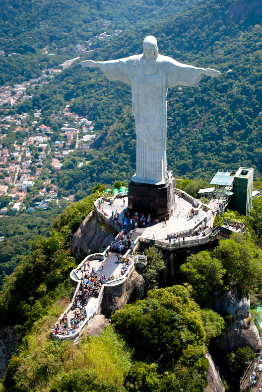
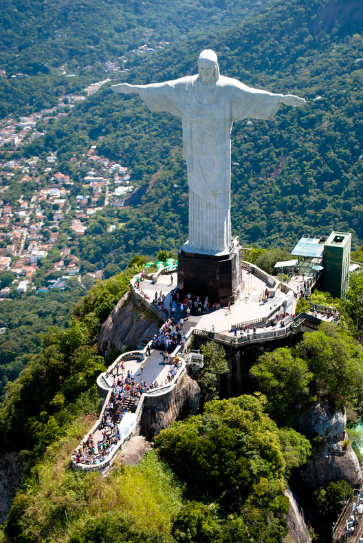

7 Maravillas del Mundo Moderno
 



Coliseo (Italia)
Cristo Redentor (Brasil)
Pirámide de Kukulkán en Chichén Itzá (México)
La Muralla China (China)
Petra (Jordania)
Machu Picchu (Perú)
Taj Mahal (India)